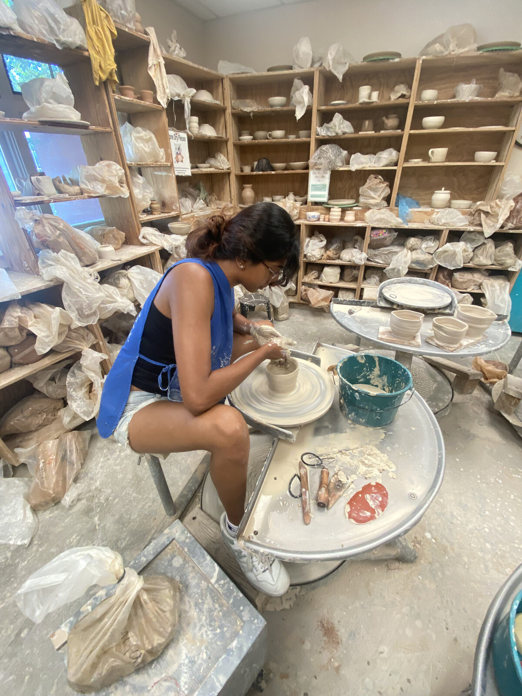

Translating public health evidence into action.
I recently graduated with a Master's of Public Health from Columbia University, concentrating in Population and Family Health with a certificate in Health Policy & Practice. My work sits at the intersection of program planning & evaluation, health communications, and systems strengthening. Throughout my career, I have developed skills in mixed-methods research, relationship building, and designing communications.
My path started at UC Davis, where I studied Human Development with minors in Public Health and Tech Management. Studying at the intersection of community health and healthcare management still shapes how I approach public health today: Improving systems and policies will enhance care delivery across the lifespan.



Rooted in Community
From tabling for health promotion initiatives to hosting wellness workshops in the pottery studio, community has always been the reason I show up. Learning from communities is what makes public health so important.
How I Lead & Collaborate
My top four CliftonStrengths, and how they show up in my work.
Input
I'm a collector — of articles, data points, ideas, and resources — because you never know which piece will turn out to be exactly what a project needs.
Developer
I notice potential in people and enjoy investing in their growth, celebrating the small signs of progress along the way.
Communication
I like turning complex ideas into words, stories, and presentations that other people can actually act on.
Responsibility
Once I commit to something, I own it fully — follow-through and reliability are how I build trust with a team.
Public health, built from evidence to implementation.
Program Design & Evaluation
I design logic models, mixed-methods data collection instruments, and implementation strategies that turn program goals into measurable outcomes — as I did for Columbia's Opioid Overdose Prevention Program.
Health Policy & Systems Consulting
I benchmark institutions, define customer segments, and build partnerships with national health organizations like NACCHO, ASTHO, and the CDC Foundation to strengthen local and state health departments.
Research & Data
From a first-author rapid review on hypertensive disorders of pregnancy to enterprise-wide communication analytics at Kaiser Permanente, I turn data into decisions in SPSS, Tableau, and PowerBI.
More of my work.
Experience
A full look at my roles in health systems consulting, program evaluation, and clinical operations, plus my publications.
Let's Connect
I'm currently exploring roles in program evaluation, health policy, and public health systems strengthening.
From training to impact
Education & Training
- MPH, Population & Family Health — Columbia Mailman
- Certificate, Health Policy & Practice
- BS, Human Development — UC Davis, summa cum laude
- Minors in Public Health & Tech Management
What I Do
- Design and facilitate health education sessions
- Build partnerships
- Engage in mixed-methods research projects
- Guide teams to align on strategic priorities
What It Produces
- Curricula reaching thousands annually
- Culturally sensitive programming that reaches large audiences
- Published, peer-reviewed research
- Business and funding plans for health systems
Impact
- High quality care delivery
- Stronger local and state health departments
- Programs built to last